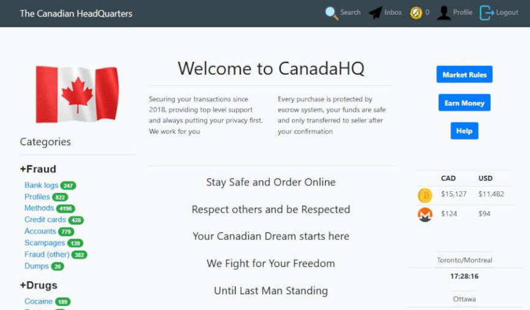
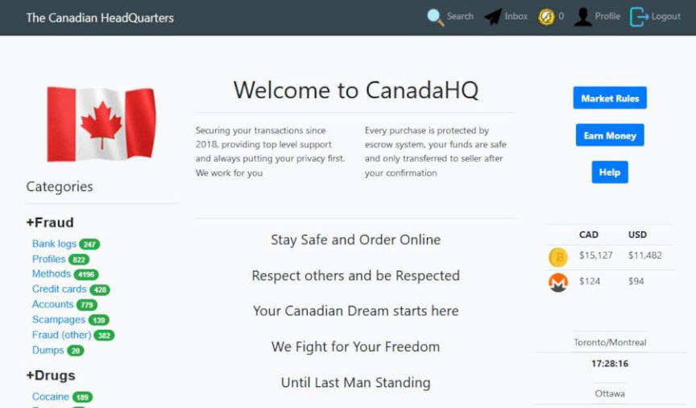

Suspected CanadaHQ Admin Arrested in Canada
Canadian law enforcement shut down Canadian Headquarters and arrested the marketplace’s alleged administrator.
Four people, including the alleged creator of Canadian Headquarters (CanadaHQ), received fines for violating Canada’s anti-spam legislation, according to the Canadian Radio-television and Telecommunications Commission (CRTC). In an announcement on January 26, 2022, the CRTC revealed that in 2020 and 2021, the regulatory agency had investigated CanadaHQ, its administrator, and three others associated with the market. Following the execution of warrants by CRTC staff in 2021, CanadaHQ disappeared.

In 2021, a former CanadaHQ vendor posted on Dread that the market had exit scammed. The site “deepwebmarketsreview,” which I am sure is a trusted source, published an article about the market’s apparent exit scam in July 2021. Someone claiming to be a CanadaHQ administrator or staff member had contacted me in April 2021 about user migration after the Tor Project killed v2 onions. I suspect Canadian LEOs/regulatory agency employees arrested the alleged market administrator between April 25, 2021, and July 1, 2021.
The agency focused on four suspects who “allegedly sent emails mimicking well-known brands in order to obtain personal data including credit card numbers, banking credentials, and other sensitive information.”
The following defendants received penalties for sending commercial electronic messages without consent in violation of Canada’s anti-spam legislation (CASL):
Chris Tyrone Dracos (a.k.a. Poseidon); Marc Anthony Younes (a.k.a CASHOUT00 and Masteratm); Souial Amarak (a.k.a Wealtyman and Supreme) and Moustapha Sabir (a.k.a La3sa)
According to the CASL, Dracos is the creator and administrator of the marketplace. Dracos received a penalty of $150,000, and the others received penalties of $50,000. His penalty reflects the fact that he allegedly aided in the “commission of numerous violations of CASL by the platform’s vendors and customers.”
CRTC claimed that law enforcement has identified “a number of other vendors” and that “actions will be taken against them in the near future.”
Unsurprisingly, the CRTC had assistance from the Royal Canadian Mounted Police’s National Edition, the Sûreté du Québec, and Flare Systems.
Steven Harroun, Chief Compliance and Enforcement Officer, CRTC:
“Some Canadians are being drawn into malicious cyber activity, lured by the potential for easy money and social recognition among their peers. This case shows that anonymity is not absolute online, and there are real-world consequences when engaging in these activities. Canadian Headquarters was one of the most complex cases our team has tackled since CASL came into force. I would like to thank the cyber-security firm Flare Systems, the Sûreté du Québec, and the RCMP’s National Division for their invaluable assistance. Our team is committed to investigating CASL non-compliance on all fronts.”
Flare Systems’ “AI-driven technology monitors the dark, deep and clear web,” according to their website. The differences between Flare Systems’ solutions and Experian’s “FREE Dark Web Triple Scan” are not apparent.
I do not know what happened here. Did Canada’s version of the FCC randomly investigate some people responsible for sending phishing emails who just happened to run CanadaHQ?
archive.is, archive.org, archiveiya74codqgiixo33q62qlrqtkgmcitqx5u2oeqnmn5bpcbiyd.onion
Four people, including the alleged creator of Canadian Headquarters (CanadaHQ), received fines for violating Canada’s anti-spam legislation, according to the Canadian Radio-television and Telecommunications Commission (CRTC). In an announcement on January 26, 2022, the CRTC revealed that in 2020 and 2021, the regulatory agency had investigated CanadaHQ, its administrator, and three others associated with the market. Following the execution of warrants by CRTC staff in 2021, CanadaHQ disappeared.

CanadaHQ | Source: @darkdotfail
In 2021, a former CanadaHQ vendor posted on Dread that the market had exit scammed. The site “deepwebmarketsreview,” which I am sure is a trusted source, published an article about the market’s apparent exit scam in July 2021. Someone claiming to be a CanadaHQ administrator or staff member had contacted me in April 2021 about user migration after the Tor Project killed v2 onions. I suspect Canadian LEOs/regulatory agency employees arrested the alleged market administrator between April 25, 2021, and July 1, 2021.
The agency focused on four suspects who “allegedly sent emails mimicking well-known brands in order to obtain personal data including credit card numbers, banking credentials, and other sensitive information.”
The following defendants received penalties for sending commercial electronic messages without consent in violation of Canada’s anti-spam legislation (CASL):
According to the CASL, Dracos is the creator and administrator of the marketplace. Dracos received a penalty of $150,000, and the others received penalties of $50,000. His penalty reflects the fact that he allegedly aided in the “commission of numerous violations of CASL by the platform’s vendors and customers.”
CRTC claimed that law enforcement has identified “a number of other vendors” and that “actions will be taken against them in the near future.”
Unsurprisingly, the CRTC had assistance from the Royal Canadian Mounted Police’s National Edition, the Sûreté du Québec, and Flare Systems.
Steven Harroun, Chief Compliance and Enforcement Officer, CRTC:
“Some Canadians are being drawn into malicious cyber activity, lured by the potential for easy money and social recognition among their peers. This case shows that anonymity is not absolute online, and there are real-world consequences when engaging in these activities. Canadian Headquarters was one of the most complex cases our team has tackled since CASL came into force. I would like to thank the cyber-security firm Flare Systems, the Sûreté du Québec, and the RCMP’s National Division for their invaluable assistance. Our team is committed to investigating CASL non-compliance on all fronts.”
Flare Systems’ “AI-driven technology monitors the dark, deep and clear web,” according to their website. The differences between Flare Systems’ solutions and Experian’s “FREE Dark Web Triple Scan” are not apparent.
I do not know what happened here. Did Canada’s version of the FCC randomly investigate some people responsible for sending phishing emails who just happened to run CanadaHQ?
archive.is, archive.org, archiveiya74codqgiixo33q62qlrqtkgmcitqx5u2oeqnmn5bpcbiyd.onion